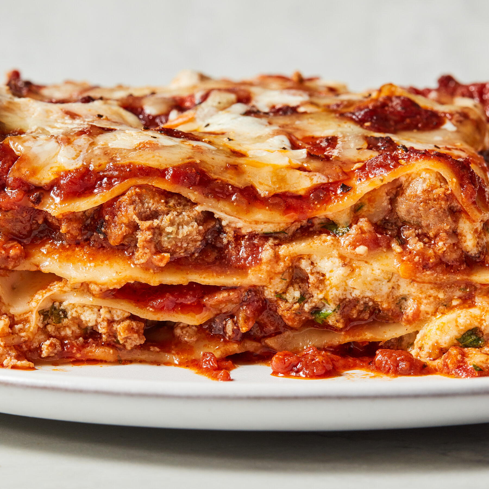

Lasagna
Welcome to the Lasagna recipe page! Here, you'll find a delightful recipe that will make your taste buds dance with joy.

Introducing our treasured family recipe for authentic Lasagna! Layers of pasta, rich meat sauce, creamy béchamel, and a blend of cheeses baked to perfection. Each bite is a comforting embrace
that warms your heart and soul.
Ingredients for lasagna!
- 12 lasagna noodles
- 500 g ground beef or pork
- 1 large onion, chopped
- 2 cloves garlic, minced
- 800 g canned tomatoes, crushed
- 2 tablespoons tomato paste
- 1 teaspoon dried oregano
- 1 teaspoon dried basil
- Salt and pepper to taste
- 2 cups ricotta cheese
- 1 egg
- 2 cups shredded mozzarella cheese
- 1 cup grated Parmesan cheese
- 2 tablespoons olive oil
- Fresh basil leaves for garnish (optional)
Instructions to make lasagna!
- Preheat the oven to 180°C (350°F).
- Cook the lasagna noodles according to package instructions. Drain and set aside.
- In a large skillet, heat olive oil over medium heat. Add the chopped onion and minced garlic, sauté until translucent.
- Add the ground meat to the skillet and cook until browned. Drain excess fat if necessary.
- Stir in the crushed tomatoes, tomato paste, oregano, basil, salt, and pepper. Simmer for about 20 minutes, allowing the flavors to meld.
- In a bowl, mix the ricotta cheese with the egg, salt, and pepper until well combined.
- In a baking dish, spread a thin layer of meat sauce on the bottom. Place a layer of lasagna noodles over the sauce.
- Spread half of the ricotta mixture over the noodles, followed by a layer of mozzarella cheese.
- Add another layer of meat sauce, followed by another layer of noodles. Repeat the process until all ingredients are used, finishing with a layer of noodles topped with meat sauce and a generous layer of mozzarella and Parmesan cheese.
- Cover the baking dish with aluminum foil and bake in the preheated oven for 25 minutes.
- Remove the foil and bake for an additional 15 minutes, or until the cheese is bubbly and golden brown.
- Let the lasagna rest for about 10 minutes before slicing. Garnish with fresh basil leaves if desired.
- Serve hot and enjoy your homemade Lasagna, a dish that brings warmth and joy to every meal!
Enjoy your meal!
We hope you enjoy making and savoring this delicious Lasagna. It's a dish that not only fills your stomach but also warms your heart. Happy cooking and bon appétit!
More Recipes
Check out our Chicken Biryani recipe for another delightful dish that will tantalize your taste buds!
Few more recipes
Explore more recipes on our homepage!